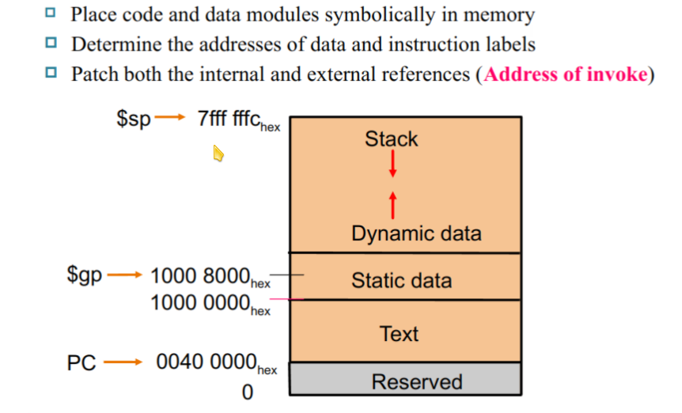
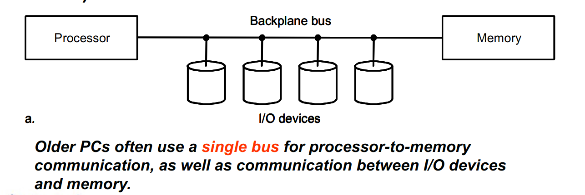
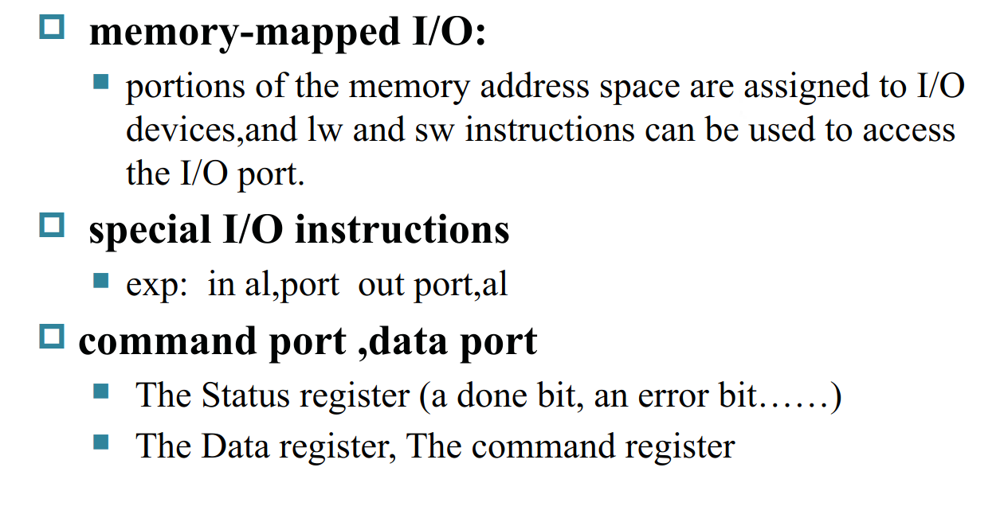

计算机组成
因此我只记录了一下自己遇到的重难点，以及自己的一些其他思考
Chapter 1
Eight Great Ideas in Computer Architecture
-
Design for Moore's Law
Moore's Law: The number of transistors on a chip will double about every 18 - 24 months.
- 为了追求更高的性能，我们可以通过增加晶体管的数量来提高计算机的性能。但是，随着晶体管数量的增加，计算机的功耗和散热问题也会变得越来越严重，遇到功耗墙等问题。
-
Use Abstraction to Simplify Design
- 计算机的多层次抽象结构：数字逻辑、指令集架构、操作系统、编程语言、应用程序等。
-
Make the Common Case Fast
- 通过优化运行最多的操作来提高计算机的性能。
-
Performance via Parallelism
- 并行加速
-
Performance via Pipelining
- 流水线加速
-
Performance via Prediction
- 通过预测操作提高性能，如分支预测，缓存预读等
-
Hierarchy of Memories
-
计算机的存储器层次结构，如下：

-
-
Dependability via Redundancy
- 利用冗余提高系统可靠性，即多保险，如备份等
Performance
主要要知道专有名词的定义，计算方法相对还是简单的
-
Performance = 1 / Execution Time
-
Execution Time = Clock Cycles * Clock Cycle Time
-
CPI (Cycles Per Instruction) = Clock Cycles / Instructions
-
MIPS (Million Instructions Per Second) = Frequency / CPI / \(10^6\)
Chapter 2
Risc-V 的指令集架构
-
以字节（1 byte = 8 bit）为最小寻址单位
-
Little-Endian 小端存储
-
words align 对齐不需要（虽然会影响效率）
-
指令（程序）被当作数据存储在内存中
-
寻址方式

指令汇总
-
指令格式

-
指令集

-
寄存器使用
Fast locations for Data
一些应用
-
RISC-V 的跳转指令
-
offset 是基于当前指令的地址的偏移，这不同于其他一些汇编是基于下一条指令的偏移的。即如果是跳转语句 PC 就不 +4 了，而是直接 +offset
-
branch/jal指令的跳转为自动加上 imm * 2，因此手写参数时可以视为以4为基数
-
-
switch case
- 通过记录一个跳转表实现多个分支的跳转
-
basic block
- 没有分支结构的代码块，可以通过一些优化手段提高性能
-
procedure call
-
caller: jal ra, procedure (PC + 4 -> ra, PC -> procedure)
-
callee: jalr x0, 0(ra) (ra -> PC)
-
使用 sp 栈指针开辟栈空间，将参数保存在栈中并在调用结束后释放栈空间，恢复相应的寄存器。
-
ra 保存返回地址
-
通过 sp + offset / fp（进入程序时的栈顶） + offset 的方式访问栈中的数据
-
a0 - a7 用于传递参数，返回值通过 a0 传递
-
t0 - t6 为临时变量，可以不用管
-
s0 - s11 必须保存
-
-
leaf procedure(没有递归调用): exhaustively use temporary registers then must-saved registers
-
atomic operation
-
锁存指令对，如
在读取数据的同时，将数据锁定
在写入数据的时候，检查数据是否被修改(rd1 = 0)，如果没有则写入
最终结果为（rd2 = 0）则写入成功(rd1 = rs, rs1 = rs2)，否则写入失败
atomic swapagain: lr.d x10, (x20) // load-reserve Mem[x20] to x10(x10 = 0 now) sc.d x11, (x20), x23// store-conditional x23 to Mem[x20] bne x11, x0, again // if x11 != 0, failed add x23, x0, x10 // swap x23 and Mem[x20]程序编译
-
-

-
Compiler -> Assembly Language
-
Assembler -> Object Module

-
Linker -> Executable Program
-
Static Linking
- 将所有的库文件都链接到一个可执行文件中
-
Dynamic Linking
- 在运行时再链接使用到的库文件函数

-
-
Loader

Chapter 3
数的表示
- 在各种课程内已经出现过好多次了，没什么特别好说的
运算
-
关于 overflow （同号相加出异号）的处理 （最后一位 Cin xor Cout = 1）
-
ALU detection
- Exception
-
Overflow log
- Store instruction address in a special register EPC
-
Jump to exception handler
-
Correct & Return
-
Return with error code
-
Abort program
-
-
-
Addition
-
Carry Ripple Adder (数逻讲过，略)
-
Carry Lookahead Adder (CLA)
-
Generate: Gi = Ai & Bi
-
Propagate: Pi = Ai | Bi
-
Carry: Ci = Gi | (Pi & Ci-1)
将递推式不断展开，可以得到每一个Ci的表达式，这样就可以并行进行每一位的计算，大大提高了速度
不过随着位数的不断增加，硬件复杂度也会不断增加，因此实际上将会每4位或者8位作为一个单元，然后再进行并行计算
如上图，根据输入，通过每个小单元里的CLA 可以算出每个小 pi, gi
然后进一步，可以得出每个大的 Pi, Gi, 然后通过大的 CLA 可以得出每个大的 Ci
这个Ci再传入每个小的 CLA， 就可以算出最终的结果了
-
-
Carry Select Adder (CSA)
-
利用 预测 & 冗余的方法
-
相当于对上述CLA的一个改进，预先将 Cin = 0 / 1 的可能值都算出来，然后根据输入的 Cin 选择其中一个
-
-
slt (set less than)
- a < b --> a - b < 0
-
-
Multiplier && Division
佬的笔记很详细了
核心就是充分利用结果寄存器，将 乘数 / 被除数 放到寄存器的右半冗余部分进行运算，并且变乘除法为加减法
Booth 算法，减少“1” 的个数，提高效率，每一串”1“只需要运算两次
-
Float
各种课讲过很多次了，略
特殊标记：
-
Accurate Arithmetic
-
guard bit
- 精确位数右边的一位
-
round bit
- 精确位数右边的第二位
-
sticky bit
- 精确位数右边的第三位及以后的位数，只要有一个为1，就置为1
-
method

-
-
chapter 6
考试应该涉及的不多，这里简单的记录一下一些零碎的公式和概念
Amdahl's Law
说明了串行部分对并行化效率的影响
-
\(Speedup = \frac{1}{(1 - f) + \frac{f}{s}}\)
-
f: 被并行化的部分的比例
-
s: 并行化部分的加速比
Disk Storage and Dependability
-
Disk
-
特征

-
结构
-
Platter (盘片)，一般为堆叠的多个盘片
-
Track (磁道)，盘片上的一圈
-
Sector (扇区)，磁道上的一个片段
-
-
操作
\[ latency = seek + rotation + transfer + controller \]-
Seek Time (寻道时间)
minimum、average（一般给出这个常数）、maximum
-
Rotational Latency (旋转延迟)
\[ 平均延迟_{旋转} = \frac{0.5 圈}{转速} \] -
Transfer Time (传输时间)
\[ 传输时间 = \frac{数据大小}{传输速度} \] -
Disk Controller（控制器耗时）
一般为给定常数
-
-
Flash
Nonvolatile semiconductor storage（非易失性半导体存储器）
相比磁盘，更小更快更好用，不过有擦写上限

-
性能优化：
-
人为调整访存顺序以减小seek time
-
更好的控制器
-
加缓存
-
-
有效性：

-
Fault Avoidance：生产结构上尽量避免
-
Fault Tolerance：通过冗余设计，在出现故障时可以恢复正常运行
-
Fault Forecasting：尝试预测故障发生
-
-
可靠性：
粗略估计
如果使用 n 个独立的小磁盘来充当一个大磁盘，那么大磁盘的可靠性认为是小磁盘可靠性的\(\frac{1}{n}\)
-
RAID(Redundant Array of Inexpensive Disks)
-
RAID 0：No Redundancy
- 无冗余，提高性能
-
RAID 1：Disk Mirroring/Shadowing
- 直接镜像复制一份，最高代价，最高可靠性
-
*RAID 2
-
RAID 3：Bit-Interleaved Parity Disk
为每一位数据添加一个奇偶校验位，用于检测错误和恢复数据
这样可以恢复一个磁盘的数据，但是无法恢复多个磁盘的数据
-
RAID 4：Block-Interleaved Parity Disk
类似于 RAID 3，但是是以块（stride）为单位进行奇偶校验（一列为一个磁盘）
little read只要读取一个磁盘就可以了，而不需要读取所有的磁盘
little write需要根据数据变化重新计算奇偶校验位（两次异或），然后写入
large write会写入一整行，可以直接重新计算整个校验块
-
RAID 5：Block-Interleaved Distributed Parity
由于每次写入操作都会修改校验块，但是 RAID 4 的校验块是在一个磁盘上，因此会造成阻塞瓶颈
因此 RAID 5 将校验块分布到所有的磁盘上，这样每次写入操作都会修改不同的校验块，提高了性能

-
RAID 6：P+Q Redundancy
容易发现，前面的方法都只能恢复一个磁盘的数据，因此 RAID 6 引入了两个校验块，可以恢复至多两个磁盘的数据
-
-
Buses and Other Connections
-
类型

-
内存

history

-
Synchronous vs. Asynchronous
-
同步：时钟信号同步
-
异步：无需时钟信号同步
-
I/O发出读请求，内存读到信号，从数据总线读取地址，并发出Ack信号确认
-
I/O 读取到Ack信号，停止发出请求，等待数据
-
内存发现请求信号消失，完成一次握手，停止Ack信号
-
内存读取对应数据，写入数据总线，并发出Data Ready信号
-
I/O 读取到Data Ready信号，从数据总线读取数据，并发出Ack信号确认读取完毕
-
内存读到Ack信号，停止发出数据，并不再发出Data Ready信号
-
I/O 发现Ack信号消失，完成一次握手，停止Ack信号，整个数据读取过程结束
-
Example
异步带宽没有同步高，但是可以同时进行多个操作，因此在一些场景下异步更加适用
-
-
Bus Arbitration
为处理多任务，Bus可能会有多个请求，因此需要一个仲裁器来决定哪个请求优先
-
Increase Bandwidth

transfer time（同步）
-
传输地址时间
-
读数据时间
-
传输数据时间(这里一般与数据总线的宽度有关)
-
传输间隔时间等特殊时间
-
-
-
Interfacing
I/O 交互的特征


-
交互方式
-
Interrupt-Driven I/O mode
-
通过中断请求信号，CPU可以暂停当前操作，处理中断请求
-
可以处理高并发性
计算：相当于在polling的基础上乘以操作比例
-
-
Direct Memory Access (DMA)
不需要 CPU 参与，直接通过 DMA 控制器进行数据传输，不会占用 CPU 的功效
计算：关注数据传输时间
-
Polling
-
CPU 不断查询 I/O 状态，直到 I/O 完成
-
会浪费 CPU 的功效
计算：频率 * polling 时间
-
-
-
bottleneck计算
-
min(Maximum I/O rate of CPU, Maximum I/O rate of bus)
-
Time per I/O

从而可以获得所需disk的吞吐量，从而计算得最少disk个数
-
Bus
-
-
-